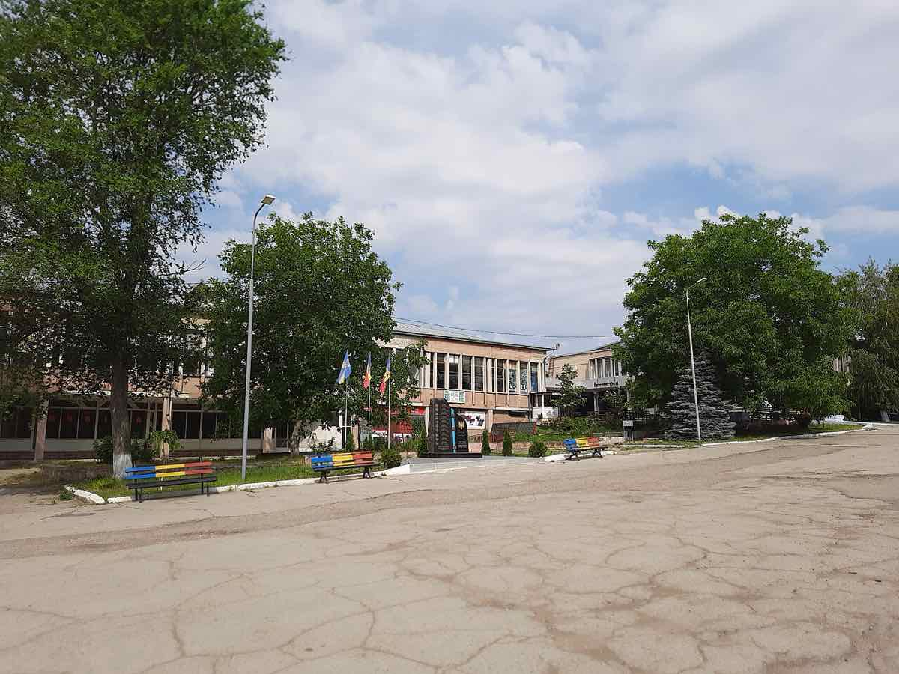
Legea Integrității a trecut de votul final al Parlamentului, merge la promulgare
Senatul, for decizional, a adoptat Legea Integrității pe 5 august 2026 cu amendamentele PSD-AUR, iar legea ar urma să meargă spre promulgare. Rezerve: numărul de voturi diferă între surse (majoritatea redacțiilor: 104 „pentru”), iar USR-PNL au contestat-o la CCR.
Politică
CCR a decis: obligația partenerilor demnitarilor de a-și declara averea, neconstituțională; termenul de 30 de zile care îl poate lăsa fără mandat pe Dominic Fritz rămâne valabil
Curtea Constituțională a decis luni, 17 august 2026, pe sesizările depuse la Legea Integrității: a declarat neconstituțională, în unanimitate, obligația…
Miruță: radarele MApN au detectat peste 100 de drone lângă spațiul aerian românesc în doar 96 de ore — ministrul spune că riscul pentru populație nu a crescut
Ministrul interimar al Apărării, Radu Miruță, a declarat pe 14 august 2026 că radarele MApN au descoperit peste 100 de drone în proximitatea spațiului aerian…
100 de zile fără guvern cu puteri depline: Nicușor Dan plănuiește să desemneze un nou premier pe 1 septembrie — variantele Grindeanu și Nazare
Pe 13 august 2026 s-au împlinit 100 de zile de la căderea Guvernului Bolojan, iar România e condusă în continuare de un executiv interimar. Președintele…
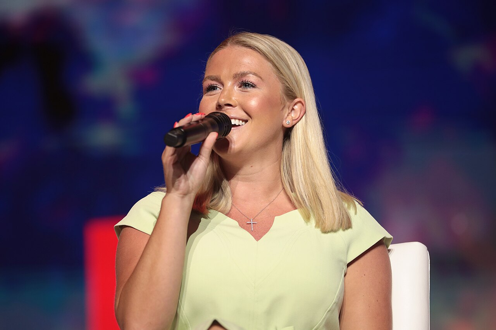
Karoline Leavitt demisionează din funcția de purtător de cuvânt al Casei Albe, la finalul lunii august
Karoline Leavitt a anunțat miercuri, 12 august 2026, că renunță la funcția de purtător de cuvânt al Casei Albe la finalul lunii august, invocând timpul cu…
Ilie Bolojan, huiduit de două ori la Constanța, de Ziua Marinei — a doua oară în doi ani consecutivi
Sâmbătă, 15 august 2026, premierul interimar Ilie Bolojan a fost huiduit și fluierat de public pe faleza din Constanța, atât la sosire cât și în timpul…
Romsilva, 371 de contracte fără licitație în 2025 — ministra Mediului convoacă de urgență conducerea
Un raport al Agenției Naționale pentru Achiziții Publice (ANAP), publicat vineri, 14 august 2026, arată că Regia Națională a Pădurilor — Romsilva a atribuit…
Economie
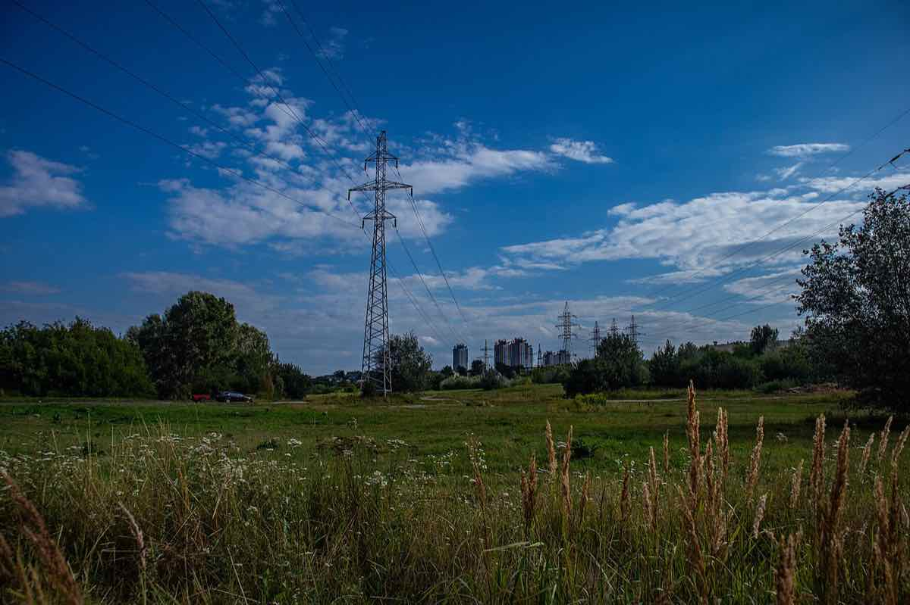
Producția de energie a României a scăzut cu 2,6% în primul semestru din 2026, arată INS
Institutul Național de Statistică (INS) a publicat date provizorii potrivit cărora producția internă de energie a României a scăzut cu 2,6% în primele șase…
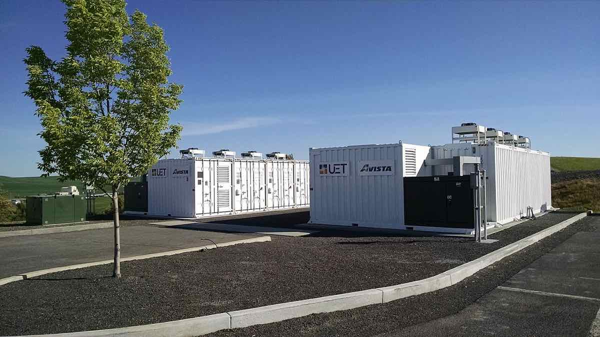
Guvernul pregătește o schemă de 80 de milioane de euro pentru baterii de stocare a energiei, la care se adaugă alte 150 de milioane deja aprobate prin Fondul pentru Modernizare
Ministerul Mediului anunță că elaborează săptămâna aceasta un act normativ pentru o schemă de 80 de milioane de euro dedicată bateriilor de stocare a…
Stellantis recheamă în service 955.000 de vehicule în America de Nord, din cauza unui software care poate bloca imaginea camerei de marșarier
🌍 Stellantis a anunțat pe 17 august 2026 recheamarea a circa 955.000 de vehicule (Chrysler, Dodge, Jeep, Ram, model 2026-2027) din SUA, Canada și Mexic…
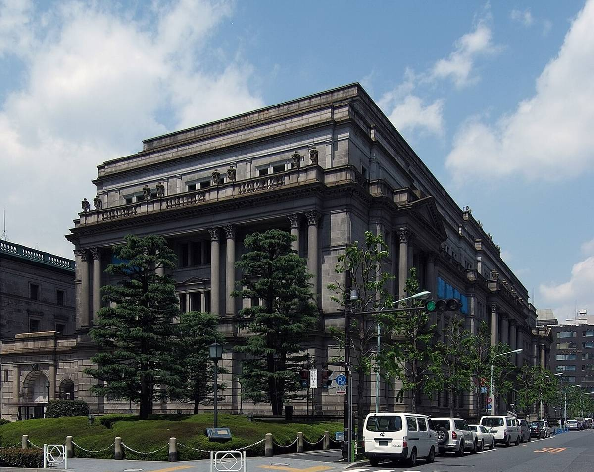
Japonia: PIB-ul a crescut doar 0,3% în trimestrul 2 din 2026, sub așteptările analiștilor — consumul privat a scăzut
Guvernul japonez a raportat pe 17 august 2026 date preliminare potrivit cărora economia a crescut cu 0,3% în trimestrul al doilea (aprilie-iunie) față de…
Arabia Saudită anunță finalizarea construcției celei mai mari uzine de hidrogen verde din lume, la NEOM — o investiție de 8,5 miliarde de dolari, cu exporturi comerciale abia din 2027
Compania NEOM Green Hydrogen (joint-venture ACWA Power, Air Products și NEOM, deținută de fondul suveran saudit PIF) a anunțat pe 13 august 2026 finalizarea…
Economia SUA a încetinit la 1,5% în trimestrul 2 din 2026, sub cele 2,1% din trimestrul anterior și sub așteptările analiștilor
Conform estimării avansate publicate de Biroul de Analiză Economică al SUA (BEA) pe 30 iulie 2026, PIB-ul real american a crescut cu o rată anualizată de…
Extern
Judecător federal respinge cererea tribului Tohono O'odham de a opri construcția zidului de frontieră pe rezervația sa
🌍 Judecătorul federal Richard Leon a respins, pe 14 august 2026, cererea Națiunii Tohono O'odham de a bloca temporar construcția a 62 de mile de zid de…
Ministrul Apărării al Japoniei pleacă în Australia și India să caute alternative la armele americane
Ministrul japonez al Apărării, Shinjiro Koizumi, pleacă într-un turneu de trei zile în Australia și India (18-20 august 2026) pentru a aprofunda cooperarea…
Houthi revendică un al doilea atac cu drone asupra rafinăriei Aramco din Jazan. Arabia Saudită și Aramco nu au confirmat
Mișcarea Houthi din Yemen a revendicat, pe 13 august 2026, un al doilea atac cu drone în mai puțin de o săptămână asupra rafinăriei Aramco din orașul saudit…
Trump ordonă reducerea substanțială a exercițiilor militare SUA-Coreea de Sud, invocând relația bună cu Kim Jong Un
Președintele american a anunțat duminică, 17 august 2026, pe Truth Social, că i-a ordonat secretarului Apărării, Pete Hegseth, să reducă substanțial…
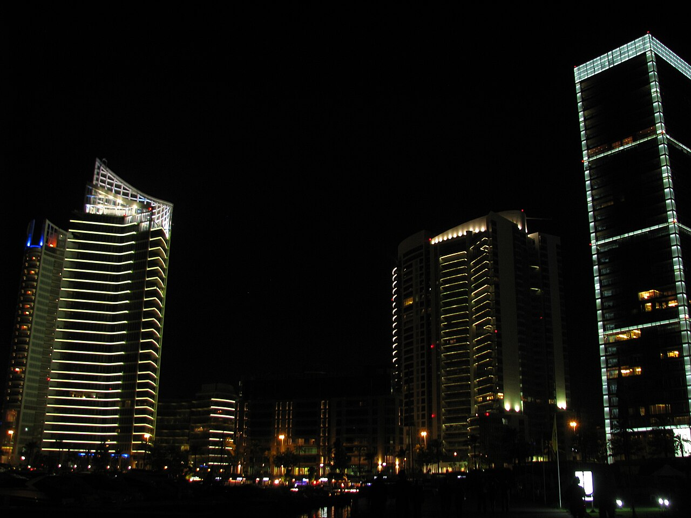
Liban și Israel au convenit o listă de țări pentru verificarea dezarmării Hezbollah? Reuters relatează, un oficial libanez neagă
Pe 13 august 2026, agenția Reuters a distribuit două relatări diferite despre negocierile de la Roma: una spune că Israel și Libanul „au convenit” o listă…
Cine ar putea prelua funcția de purtător de cuvânt al Casei Albe? Presa americană avansează opt nume, Casa Albă nu a confirmat niciunul
După ce Karoline Leavitt a anunțat că demisionează la finalul lunii august, presa americană speculează cine i-ar putea lua locul. NBC News scrie că Donald…
Știință
„Trenul glonț” chinezesc care face 0–800 km/h în 5,3 secunde cântărește 1,1 tone și nu duce pe nimeni
🌍 Ce SUSȚINE CGTN (media de stat din China), pe 10 august 2026: un vehicul maglev de 1.110 kg a accelerat de la 0 la 800 km/h în 5,3 secunde, pe o pistă de 1…
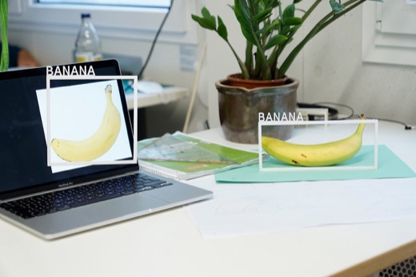
Medvi, „compania de un miliard cu doi oameni”: ce se probează și ce rămâne contestat în portretul din New York Times
Un portret viral din New York Times (2 aprilie 2026) prezintă Medvi, o firmă de telemedicină cu doi oameni, drept dovada că AI-ul poate construi o companie…
Un studiu The Lancet: majoritatea efectelor secundare din prospectul statinelor nu sunt cauzate de medicament
O meta-analiză publicată în The Lancet (februarie 2026) de colaborarea Cholesterol Treatment Trialists (Oxford), pe 19 studii randomizate și aproape 124.000…
Iunie 2026, cea mai caldă lună iunie din istorie pentru Europa de Vest — Copernicus și OMM confirmă recorduri și în ocean
Serviciul Copernicus pentru Schimbări Climatice (UE) și Organizația Meteorologică Mondială (ONU) au anunțat că iunie 2026 a fost cea mai caldă lună iunie din…
Media de stat
Global Times a lăudat „reziliența” economiei chineze. O lună mai târziu, datele oficiale arată încetinire
Ce SUSȚINE presa de stat chineză (Global Times): că economia a crescut 4,7% în S1 2026 și arată „reziliență” în fața presiunilor externe. Ce arată datele…
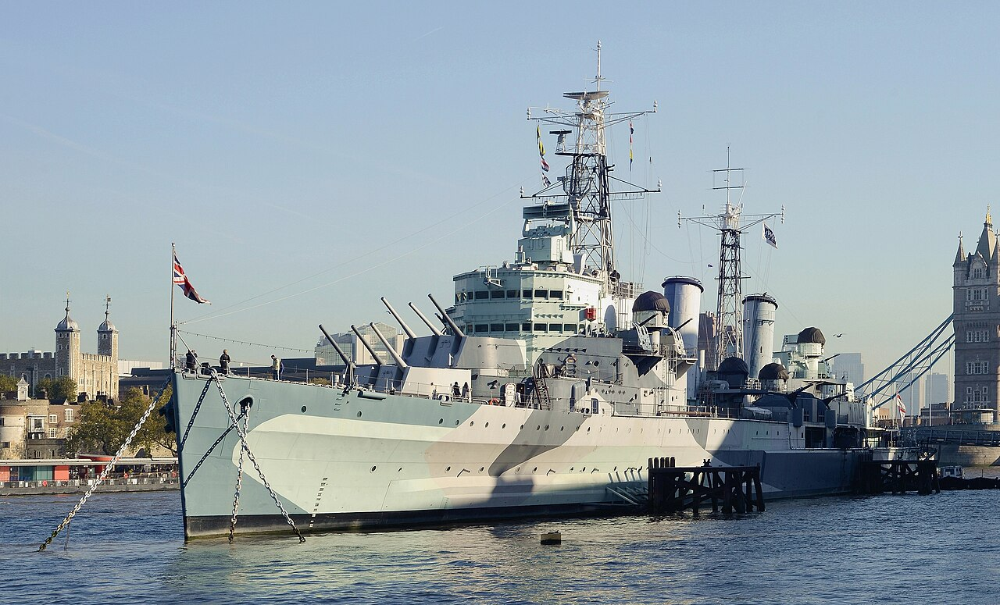
China spune că exercițiul naval cu Indonezia lângă Taiwan arată „suveranitate” asupra apelor — Taiwan și SUA vorbesc despre presiune militară, Indonezia spune că a fost de rutină
Ministerul chinez al Apărării a anunțat pe 11 august 2026 un exercițiu naval comun cu Indonezia în apele de est ale Taiwanului — prima dată când China…
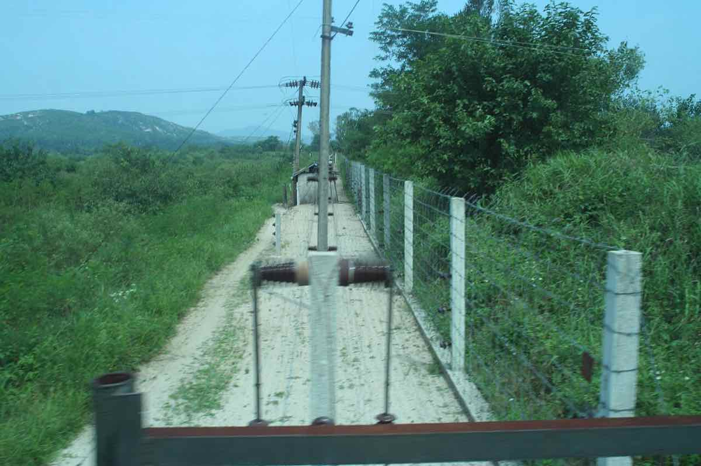
Coreea de Sud propune tratat de pace cu Coreea de Nord — presa de stat nord-coreeană (KCNA, Rodong Sinmun) nu a suflat o vorbă, arată presa independentă
📡 Președintele sud-coreean Lee Jae-myung a propus sâmbătă, 15 august 2026, de Ziua Eliberării, negocieri directe cu Coreea de Nord pentru a înlocui…
China (Xinhua): digul de pe râul Beiru, reparat după ruptura provocată de taifunul Dolphin — „fără victime”, spune presa de stat
Agenția de stat chineză Xinhua relatează că o breșă de peste 40 de metri, produsă miercuri, 12 august 2026, în digul râului Beiru (județul Jiaxian, provincia…
China (Xinhua) acuză „intenția de a răstălmăci istoria”, după ce miniștri japonezi au vizitat altarul Yasukuni la 81 de ani de la capitularea Japoniei
Pe 15 august 2026, la 81 de ani de la anunțul capitulării Japoniei în Al Doilea Război Mondial, premiera japoneză Sanae Takaichi a trimis o ofrandă rituală…
Un general iranian SUSȚINE că Qatar reține trei piloți iranieni din martie — Qatarul neagă categoric
Presa de stat iraniană (Press TV) relatează pe 15 august 2026 că generalul Mohammad Bagherzadeh SUSȚINE că trei piloți iranieni, doborâți în martie 2026 în…
Sport
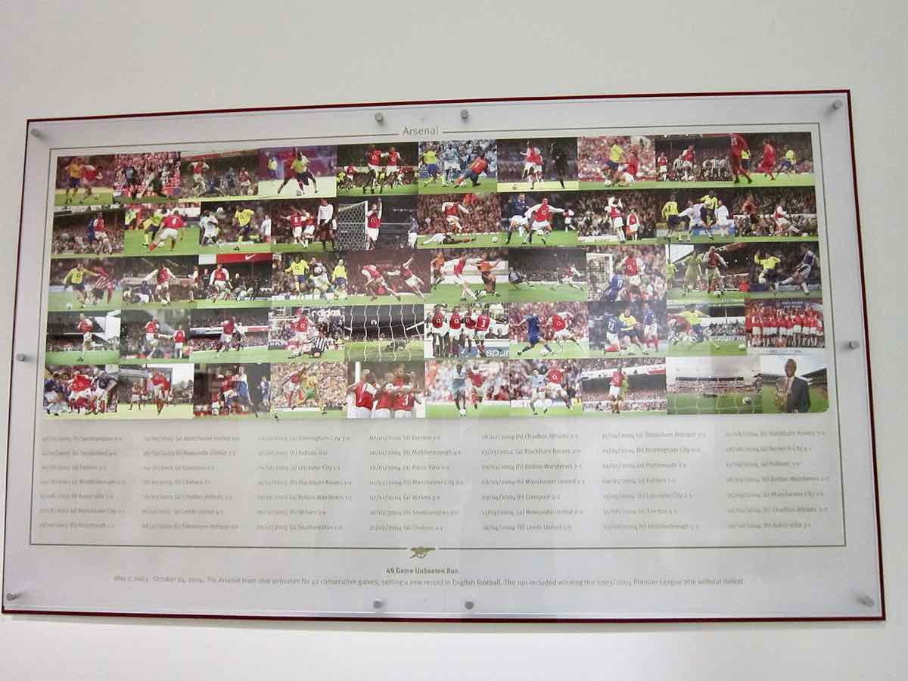
Arsenal învinge Manchester City 3-0 în FA Community Shield — primul meci al lui Enzo Maresca pe banca „cetățenilor”
Arsenal a învins Manchester City cu 3-0 duminică, 16 august 2026, la Cardiff, în FA Community Shield — trofeul care deschide sezonul de fotbal englez…
Aniela Tudor, 15 ani, aduce României aurul la sărituri, la Campionatele Europene de gimnastică de la Zagreb
Gimnasta română Aniela Tudor (15 ani, legitimată la Dinamo București) a câștigat, duminică, 16 august 2026, medalia de aur la sărituri în finala junioarelor…
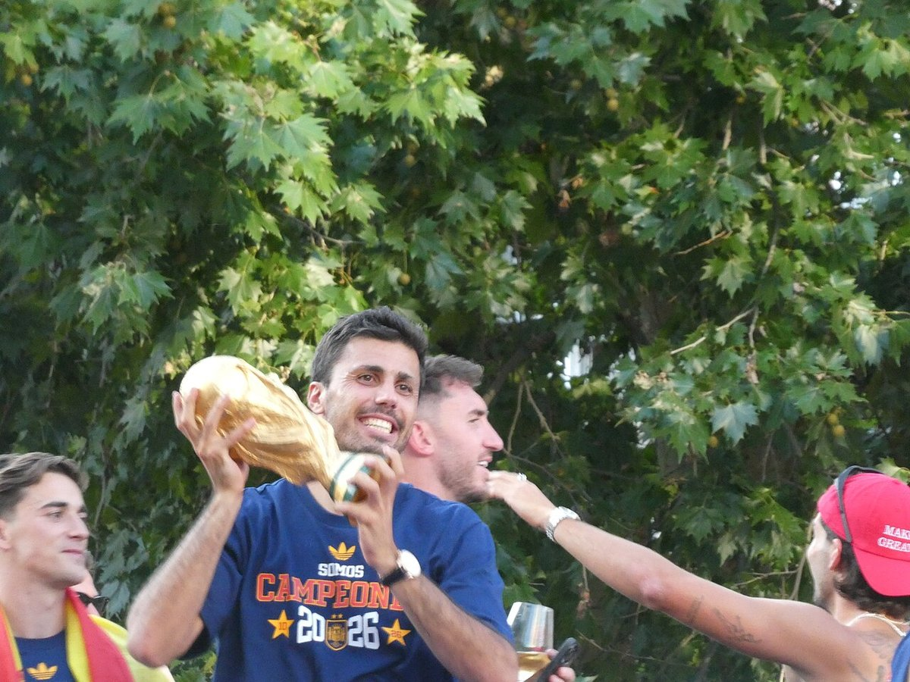
Barcelona și Manchester City ar fi convenit un transfer de 76,5 milioane de euro pentru Rodri — cluburile nu au confirmat oficial
Surse citate de Associated Press și ESPN spun că Manchester City și FC Barcelona au ajuns la un acord de aproximativ 76,5 milioane de euro pentru transferul…
Rapid – Dinamo 0-1: Daniel Pancu eliminat în minutul 54, Basarab Panduru spune că scorul „nu reflectă” jocul de pe teren
Dinamo a învins Rapidul cu 1-0 pe 15 august 2026, în etapa a V-a din Superligă, cu un gol marcat de Karamoko. Antrenorul Rapidului, Daniel Pancu, a fost…
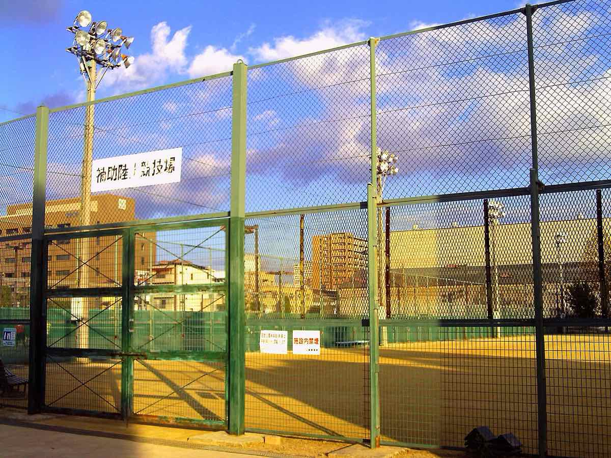
Alertă de securitate la Europenele de atletism de la Birmingham: un bărbat arestat pentru fraudă, mii de spectatori blocați peste o oră
Sâmbătă seara, 15 august 2026, un bărbat de circa 30 de ani a fost arestat la Alexander Stadium, suspectat de fraudă, după ce purta o acreditare care nu îi…
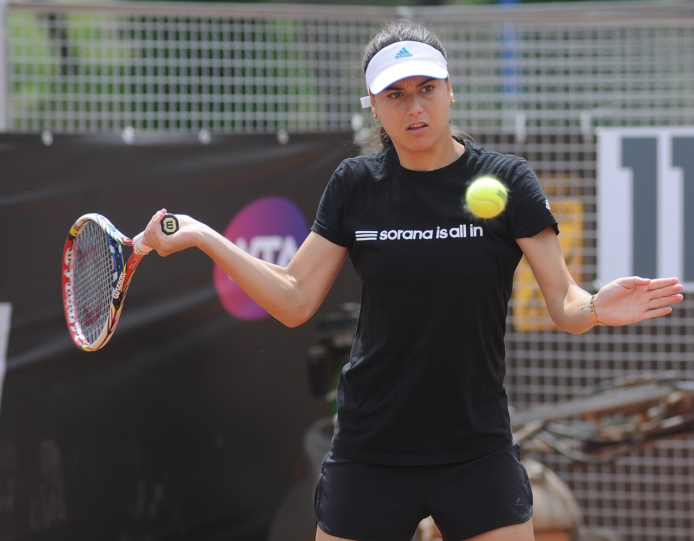
Sorana Cîrstea s-a calificat în turul trei la Cincinnati, după o victorie în trei seturi cu Nikola Bartunkova
Sorana Cîrstea (36 de ani, cap de serie 15) a învins-o pe cehoaica Nikola Bartunkova, scor 7-6(5), 6-3, în aproape două ore de joc, și s-a calificat în turul…
Social
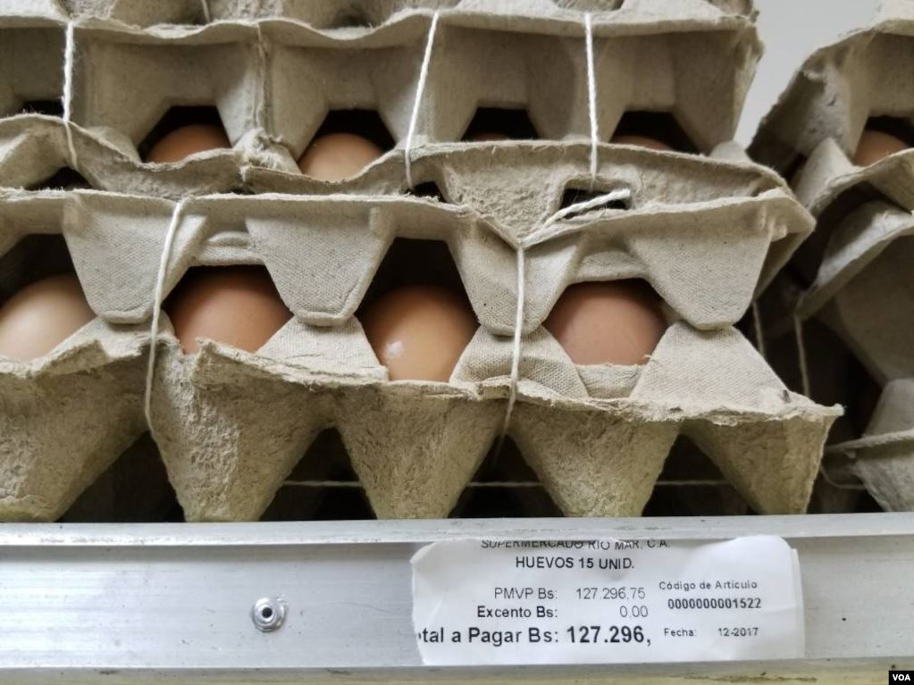
SUA: focar de salmonella legat de ouă din Texas — 98 de îmbolnăviri în 17 state, recall ridicat la risc maxim (Class I)
🌍 FDA a ridicat, pe 12 august 2026, la clasificarea Class I (risc maxim) recall-ul a circa 1,6 milioane de duzini de ouă produse de Midwest Poultry Services…
Un focar de ploșnițe închide o secție a Spitalului Bagdasar-Arseni din București
Secția de Recuperare Neuromusculară a Spitalului Clinic de Urgență Bagdasar-Arseni din București s-a închis temporar, de luni, 17 august 2026, după ce s-a…
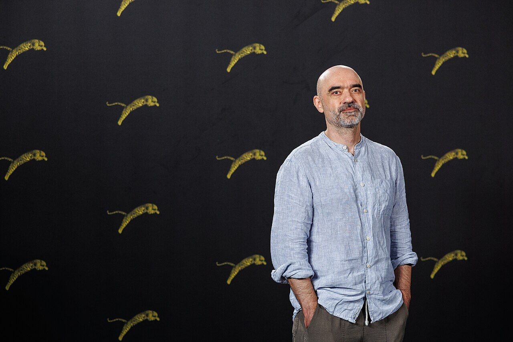
Filmul românesc „Nu e locul tău aici”, primul din istorie care câștigă Leopardul de Aur la Locarno — patru premii într-o singură ediție
Filmul „Nu e locul tău aici”, regizat de Florin Șerban și cu Adrian Văncică în rolul principal, a câștigat sâmbătă, 15 august 2026, Leopardul de Aur (Pardo…
A patra dronă doborâtă în România: un F-18 spaniol a interceptat-o lângă Galați, RO-Alert a ajuns după impact
În noaptea de 15 spre 16 august 2026, o țintă aeriană a intrat în România dinspre Republica Moldova, lângă Galați, și a fost distrusă de un F-18 spaniol…
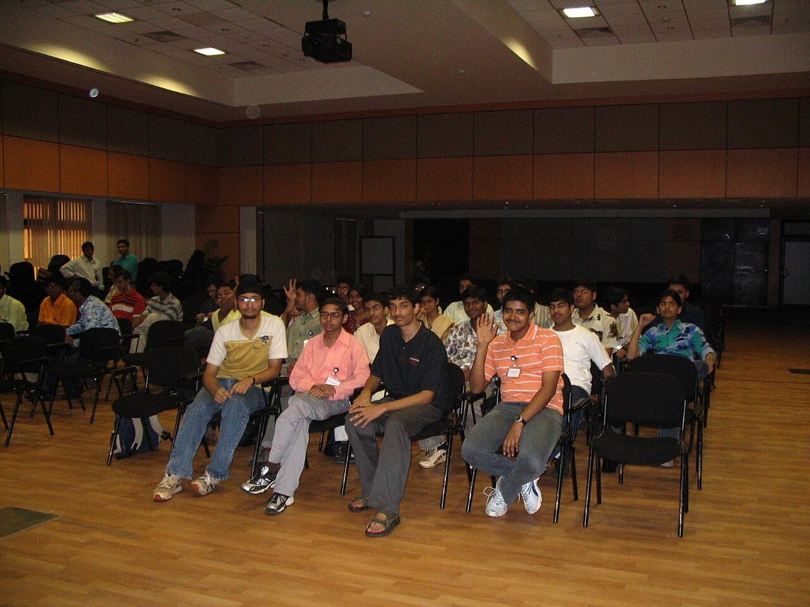
Patru elevi români au adus o medalie de aur, una de argint și două de bronz de la Olimpiada Internațională de Informatică din Uzbekistan — România urcă pe locul 2 mondial la total medalii
Lotul român a câștigat patru medalii la ediția din 2026 a Olimpiadei Internaționale de Informatică (IOI), desfășurată în Uzbekistan: aur pentru Rareș-Andrei…
Un elev de 16 ani a murit înjunghiat la o petrecere de început de an școlar în Roskilde, Danemarca
Vineri, 14 august 2026, în jurul orei 17:33, un elev de 16 ani a fost înjunghiat lângă Louisevej, în zona Folkeparken din Roskilde, la o petrecere de…